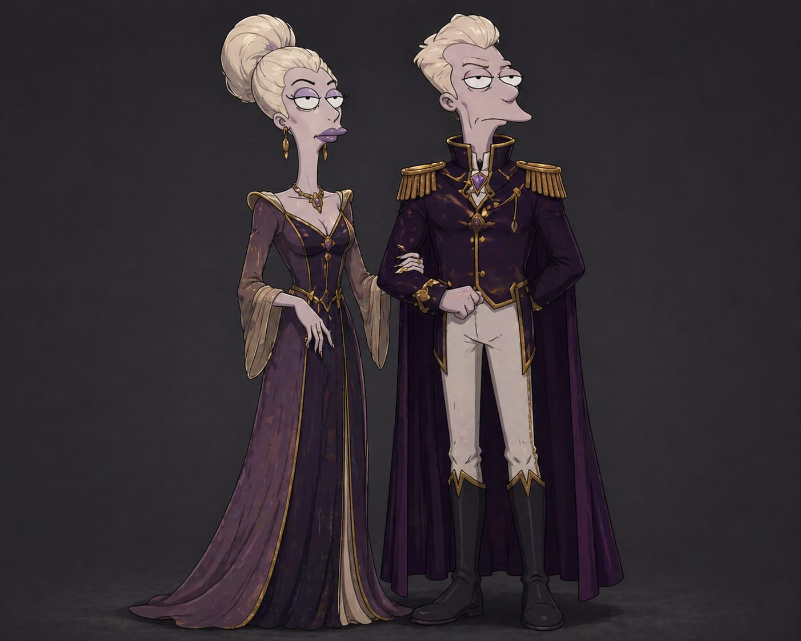
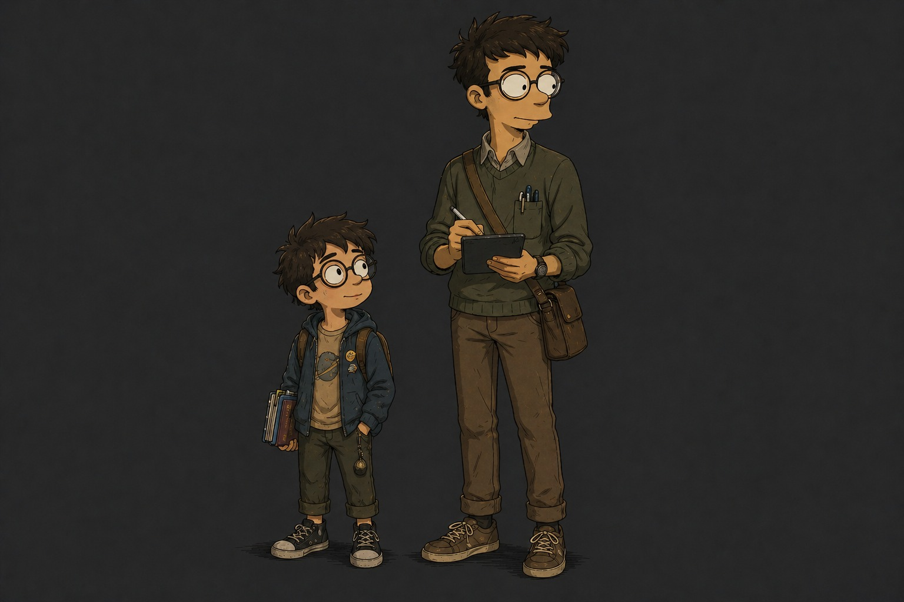
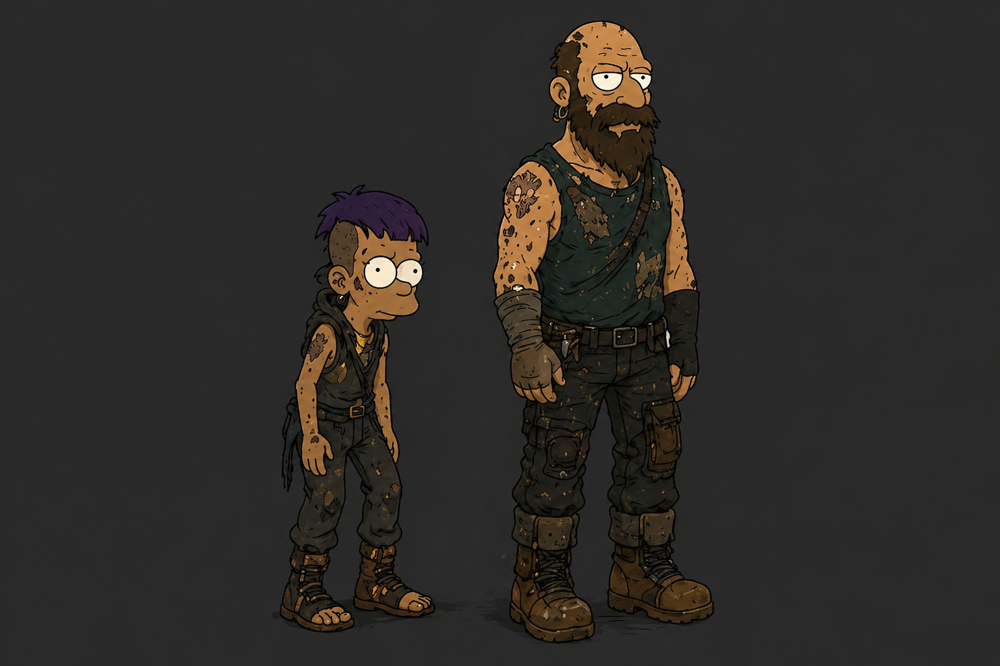

Eryon se define por una personalidad autoritaria, orgullosa y rígidamente disciplinada, marcada por un temperamento serio, dominante y frío que busca controlar su entorno ante el miedo constante a perder su poder y la presión por mantener el sistema sin mostrar debilidad. Por otro lado, Liora presenta un perfil elegante, sofisticado y perfeccionista, con un temperamento calculador y reservado que contrasta con sus conflictos internos, los cuales giran en torno a la culpa, una crisis de identidad y una creciente desconfianza hacia el sistema que amenaza sus privilegios.

Jaro se caracteriza por una personalidad amable, curiosa y metódica, con un temperamento paciente y prudente que se ve afectado por inseguridades sociales, miedo al fracaso y la constante presión por encajar o cuestionar el sistema. En contraste, Sion posee una personalidad curiosa, imaginativa y optimista, cuya naturaleza impulsiva, enérgica y espontánea convive con conflictos internos como el miedo a crecer dentro del sistema, una profunda confusión ante las injusticias sociales y un deseo constante de descubrimiento.

La Yennizor se define por una personalidad rebelde, astuta y resiliente, con un temperamento impulsivo, intenso y desafiante, reflejo de sus conflictos internos marcados por el miedo al abandono, la rabia contenida y una profunda necesidad de supervivencia y reconocimiento. Por su parte, Panchovar posee una personalidad imponente, protectora y decidida, con un temperamento tenaz, obstinado y explosivo que oculta un profundo cansancio emocional, resentimiento hacia el sistema y una lucha constante entre su instinto de supervivencia y el deseo de rebelarse.